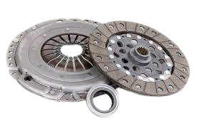

Que es un embrague?
El embrague es un sistema que permite tanto transmitir como interrumpir la transmisión de una energía mecánica a su acción final de manera voluntaria. En un automóvil, por ejemplo, permite al conductor controlar la transmisión del par motor desde el motor hacia las ruedas. En la aplicación más simple, los embragues conectan y desconectan dos ejes giratorios (ejes de transmisión). En estos dispositivos, un eje generalmente se conecta a un motor u otra unidad de potencia (el miembro impulsor), mientras que el otro eje (el miembro impulsado) proporciona potencia de salida para el trabajo. Por lo general, los movimientos involucrados son giratorios, pero también existen embragues lineales.
Para que sirve?
Cuando estás en punto muerto, el motor gira 'libre' y el vehículo no se mueve por más que lo aceleres. Por eso, cuando engranas la primera y levantas un poco el pie izquierdo, el embrague acopla la caja de cambios con ese piñón y se transmite el movimiento del cigüeñal a las ruedas. Pero claro, como la primera se queda corta enseguida y hay que usar el resto de relaciones (segunda, tercera, cuarta, quinta...) a medida que necesitas menos potencia y más velocidad, entre una y otra se pisa el embrague para desembragar, es decir, para 'desconectar' puntualmente el conjunto y poder seleccionar durante breves instantes las distintas marchas antes de embragar de nuevo (levantar el pedal). Por eso hay que pisar el pedal izquierdo tanto al subir relaciones como al reducir.